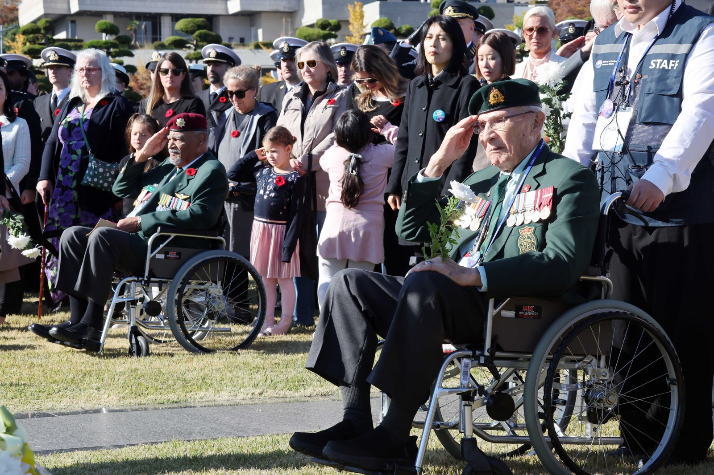
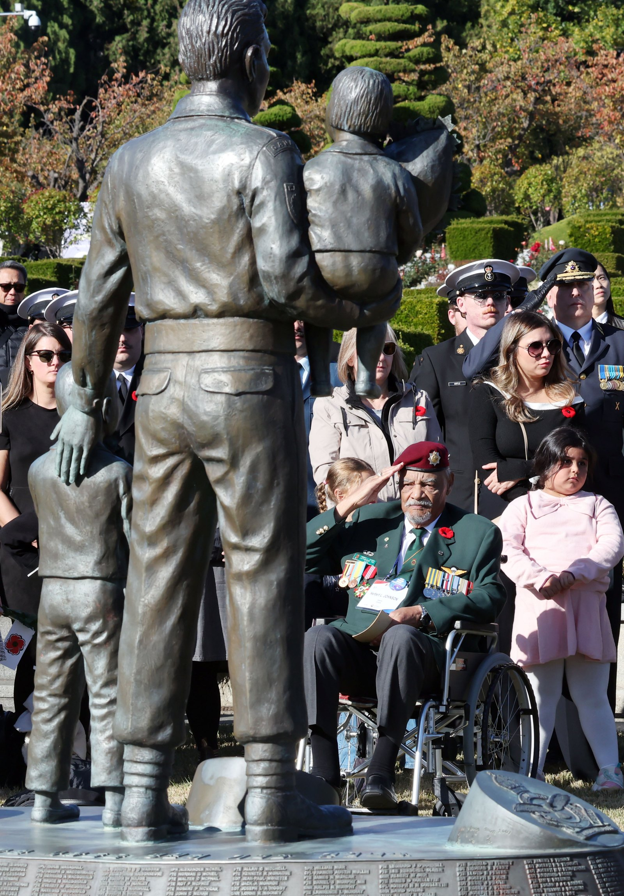
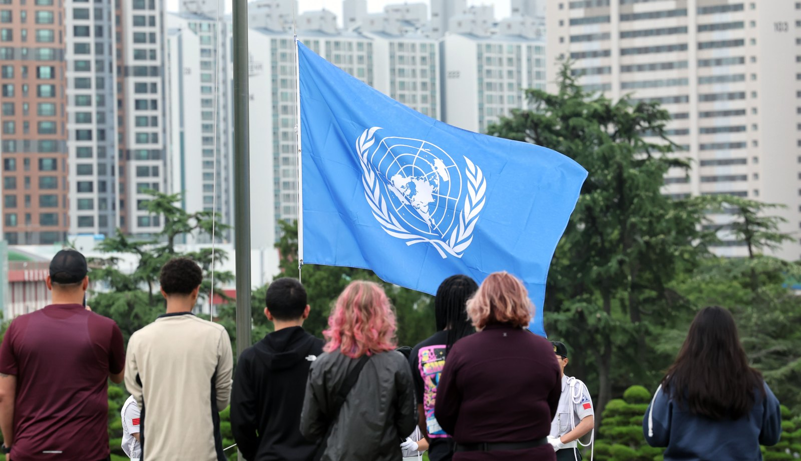
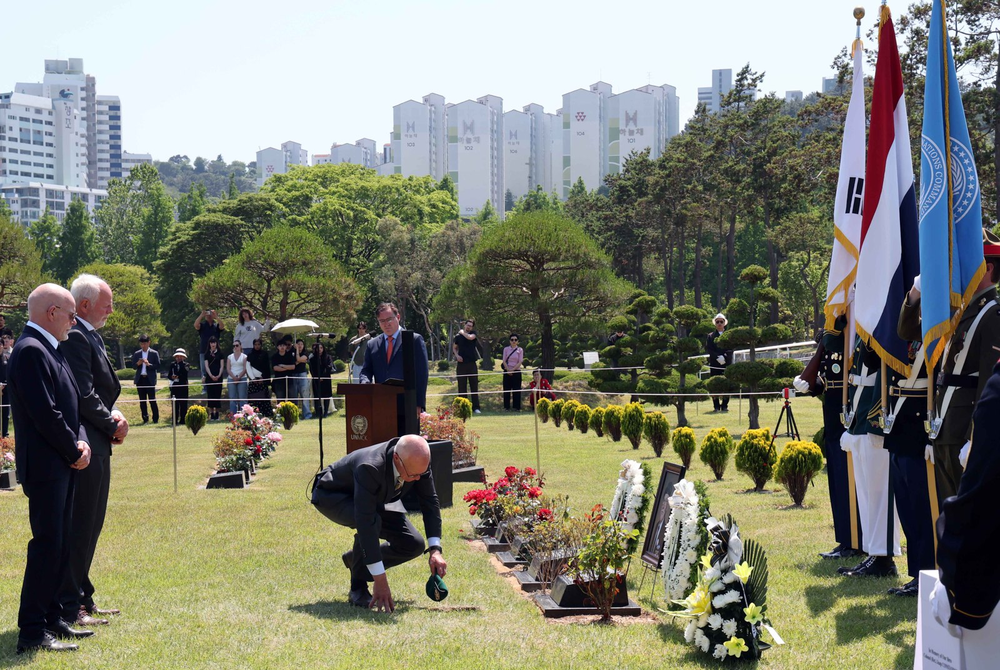
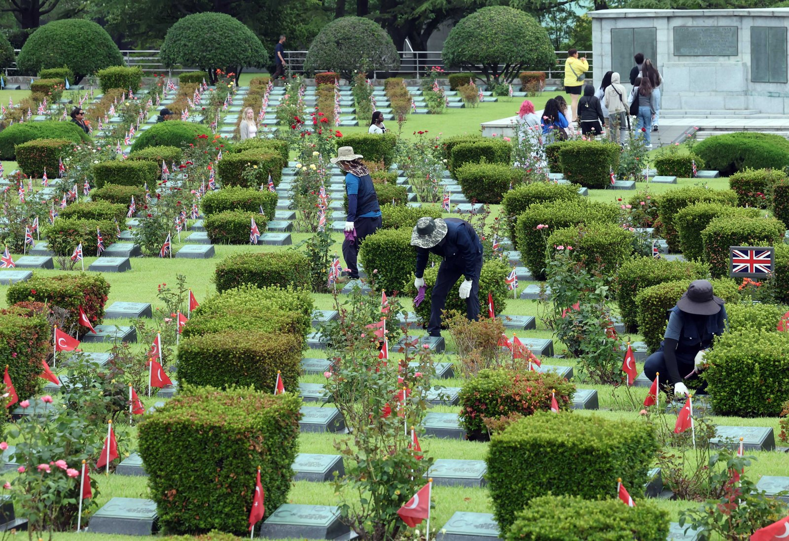
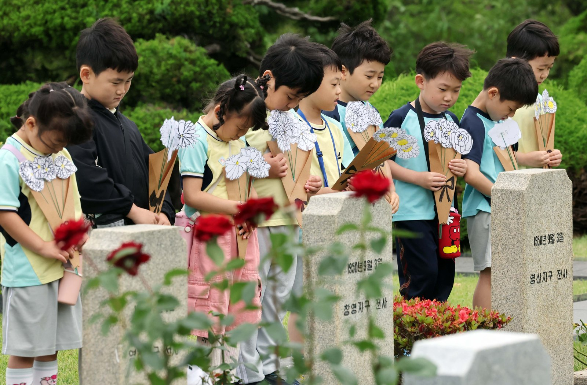

편집# 019 TURN TOWARD BUSAN
111명의 이름을 다시11월 11일 오전 11시,부산을 향한 1분
지난해 묵념에 앞서 호명된 유엔기념공원 안장자 111명. 그곳에 잠든 참전용사와 기억을 이어가는 사람들의 기록.

매년 11월 11일 한국시간 오전 11시.
부산 유엔기념공원을 향해 1분간 묵념한다.
6·25전쟁 유엔참전용사의 희생과 공헌을 기억하는 국제추모행사 ‘턴 투워드 부산’이다. 참전용사와 유가족, 시민들이 각자의 자리에서 추모에 함께한다.
묵념의 기준은 한국시간이다. 부산에서 11월 11일 오전 11시일 때, 다른 나라에서는 날짜와 시각이 다르다. 부산을 향하는 방향도 출발지에 따라 달라진다.
나의 자리에서 부산을 향해 보기 ↓내가 있는 자리와 추모의 장소
서로 다른 곳에서,
같은 부산을 향해
도시가 달라지면 부산을 향하는 방향도 바뀐다. 하지만 묵념의 기준은 한국시간 11월 11일 오전 11시, 하나의 순간이다.
내 위치를 쓰거나 가까운 도시를 선택해 부산 방향을 확인해 보세요.
서울에서 유엔기념공원은
남동쪽에 있습니다.
부산의 2026년 11월 11일 오전 11시, 서울도 11월 11일 오전 11시입니다.
서로 다른 나라에서는 같은 순간에도 날짜와 시각이 달라집니다.
도시 중심에서 지구 표면의 최단 경로를 따라 부산 유엔기념공원으로 출발하는 대략적인 방향입니다. 평면 지도에서 두 점을 이은 방향과 다를 수 있습니다. 내 위치와 방향 센서는 별도로 켤 수 있습니다. 센서 사용 시 휴대전화를 평평하게 들어 주세요. 자북·진북의 차이, 주변 금속과 기기 오차가 있어 대략적인 방향으로만 봐 주세요. 시각은 2026년 부산의 추모 순간을 환산한 값이며, 각 도시에서 열리는 별도 행사 일정은 아닙니다.
기사를 읽고, 내 자리에서 1분 묵념하기 ↓오타와에서는 아직 전날 밤이고 런던에서는 새벽이다. 각 나라의 시계가 모두 오전 11시를 가리킬 때까지 기다리는 방식이 아니다. 한국시간에 맞춰 같은 순간, 부산에 잠든 이들을 기억한다.
2025년 11월 11일
묵념 전에 부른
111명의 이름
지난해 기념식에 앞선 오전 10시부터 부경대 학생봉사단이 유엔기념공원 안장자 111명의 이름을 한 명씩 불렀다. ‘유엔참전용사 다시부르기’, 롤콜이었다. 111이라는 숫자에는 11월 11일 11시 함께 추모한다는 뜻을 담았다.
그날 기념식에는 14개 참전국의 참전용사 14명과 유가족, 국내 참전용사, 학생 등 800여 명이 참석했다. 오전 11시 정각 부산 전역에 사이렌이 울렸고, 참석자들은 1분간 묵념했다.
지금의 부산을 찾은 참전용사와 유가족에게 묘역은 추모행사장이면서 전우와 가족이 잠든 곳이다. 111명의 이름을 부른 뒤 이어진 묵념도, 그곳에 안장된 사람들을 향했다.
관련 기사 보기 · 2025년 추모식과 ‘다시부르기’ ↗
묵념이 향하는 곳
부산, 유엔기념공원
부산 남구 유엔평화로 93. ‘부산’이라는 큰 도시 이름이 가리키는 곳은 이곳 유엔기념공원이다. 한국전쟁이 한창이던 1951년 1월, 유엔군사령부가 전사자 매장을 위한 묘지를 조성했다. 같은 해 4월에는 전국 곳곳에 가매장됐던 유엔군 전몰장병의 유해가 안장되기 시작했다.
1955년 대한민국 국회는 토지를 영구히 기증하고 묘지를 성지로 지정할 것을 유엔에 건의했다. 유엔총회가 영구 관리를 결의했고, 1959년 한국과 유엔은 묘지 설치·유지에 관한 협정을 맺었다. 추모행사보다 먼저 이곳에 묘역이 있었다. 사람들이 부산을 향하는 이유는 그곳에 기억해야 할 사람들이 잠들어 있기 때문이다.
추모식에 등장하는 ‘22개 참전국’과 묘역의 국가 수는 같은 숫자가 아니다. 22개국은 전투지원 16개국과 의료지원 6개국을 합친 수다. 2026년 6월 24일 뉴시스 사진 기록상 공원에는 14개국 2339명이 안장돼 있다. 이는 당시 기준이며, 전쟁 전체의 전사자 수를 뜻하지 않는다.
이름은 ‘공원’이지만 주변의 평화공원이나 조각공원과 성격이 다르다. 관리처는 이곳을 산책·휴식보다 참배를 위한 공간으로 안내한다. 사진 속 국기와 묘비는 기념일 하루를 위한 장식이 아니다.

함께 기억하자는 제안
각자의 자리에서,
같은 곳을 향해
‘턴 투워드 부산’은 2007년 캐나다 참전용사 빈센트 커트니의 제안에서 시작됐다. 세계 각국의 참전용사와 유가족, 시민들이 한국시간 오전 11시를 기준으로 부산을 향해 묵념하는 방식이다.
행사는 2007년에 시작됐지만 처음부터 법정기념일이었던 것은 아니다. 2020년 11월 11일이 ‘유엔참전용사 국제추모의 날’로 법정기념일이 됐다.
국제추모식 기록 ↗부산 유엔기념공원
묘역을 찾는 사람들
2026년 5월 14일에는 네덜란드 참전용사의 안장식이 열렸다. 6월 24일에는 관리 직원들이 묘비를 닦았고, 유치원생들이 종이 국화꽃을 들고 참배했다.
네덜란드 참전용사 콘스탄세
전우들 곁에 묻어달라
2026년 5월 14일 부산에 안장된 야콥 코넬리스 콘스탄세는 1952년 자원해 6·25전쟁에 참전했다. 반호이츠연대 소속 중위로 미 제2보병사단에 배속돼 소대장으로 복무했고, 그해 12월 티본 능선 전투에 참가했다.
그는 전쟁에서 살아 돌아갔다. 2016년 한국 정부의 초청으로 다시 방한했을 때는 유엔기념공원에 잠든 전우들을 찾았다. 생전에 전우들이 잠든 부산에 함께 묻히기를 원했고, 2025년 4월 네덜란드에서 97세로 세상을 떠났다. 2026년 5월 14일, 그는 부산의 전우들 곁에 안장됐다.
5월 14일 안장식에는 아들 세 명을 비롯한 유가족과 한국·네덜란드 관계자들이 참석했다. 2015년 조성된 참전용사묘역의 35번째 안장자였다. 전쟁 중 전사한 장병의 묘역과, 전후 세상을 떠난 참전용사가 안장되는 묘역은 구별된다.
관련 기사 보기 · 콘스탄세의 참전과 사후 안장 ↗
묘역을 돌보는 사람들
기념일이 아닌 날에도
6·25전쟁 76주년을 하루 앞둔 2026년 6월 24일. 재한유엔기념공원관리처 직원들이 묘비를 닦고 있다.
직원들은 묘비 가까이 몸을 숙여 표면을 닦았다. 묘비 사이에는 참전국 국기와 꽃이 놓여 있었다.
관리 직원들만 묘역을 살피는 것은 아니다. 매일경제가 지난해 11월 11일 현장에서 만난 유엔평화봉사단원들은 매월 한 번씩 공원을 찾아 잡초를 뽑고 동판을 닦는다고 설명했다.
관련 기사 보기 · 매월 묘역을 찾는 봉사단원들 ↗
다음 세대의 참배
아이들이 가져온
종이 국화꽃
2026년 6월 24일, 엘지유치원 원생들은 직접 만든 종이 국화꽃을 들고 공원을 찾았다. 아이들이 참배한 곳은 전쟁 당시 유엔군으로 참전한 한국군 전몰장병묘역이다.

묵념 다음에 남는 이름
유엔기념공원 공식 사이트에서는 국가·성명·부대명 등으로 안장용사를 찾을 수 있다. 직접 찾기 어려운 사람들을 위한 온라인 헌화도 운영한다. 안장자의 기록을 읽거나 헌화하려면 아래 관리처의 공식 추모마당으로 이어갈 수 있다.
11월 11일 오전 11시, 한국시간
부산을 향해
잠시 묵념해 주세요.
6·25전쟁 유엔참전용사의 희생과 공헌을
기억하는 시간입니다.
서울에서 부산 유엔기념공원은 남동쪽입니다.
내 자리에서 부산 방향 확인하기 ↑공식 행사와 별개로, 지금 이 자리에서 하는 묵념입니다.
1분 동안, 원하면 그보다 오래 조용히 머물 수 있습니다.